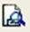
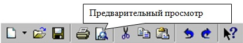
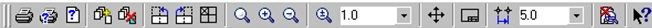
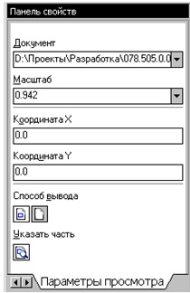
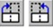
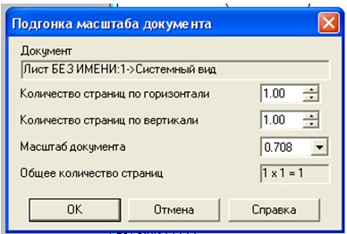
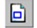
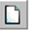

<!DOCTYPE HTML>
<html>
<head>
<meta name="keywords" content="Компас, Компас 3D,Комп'ютерна графіка,Compass">
<meta name="description" content="Методичний посібник по Компас 3D">
<meta http-equiv="content-type" content="text/html; charset=utf-8">
<title>ВИВІД КРЕСЛЕННЯ НА ДРУК</title>
<link href="style.css" rel="stylesheet">
<link rel="shortcut icon" href="favicon.png" /> 
<script type="text/javascript" src="jwplayer/jwplayer.js"></script>
<meta name="generator" content="TurboSite 1.7.1" />


</head>

<body>


<div id="wrapper">
	<div id="header-wrapper">
	<div id="header">
		<div id="logo">
			<h1><a href="index.html">КОМПАС - ГРАФІК 3D</a></h1>
			<p>Методичний посібник  для студентів ІІ - ІV курсу ППК НТУ "ХПІ"</p>
		</div>
	</div>
	</div>
	<div id="page">
	<div id="page-bgbtm">
		<div id="content">
			<div class="post">
				<h2 class="title">3.1.2 ВИВІД КРЕСЛЕННЯ НА ДРУК</h2>
				<div style="clear: both;">&nbsp;</div>
				<div class="entry">
					
<P class=MsoNormal 
style="TEXT-ALIGN: justify; MARGIN: 0cm 0cm 0pt; TEXT-INDENT: 35.45pt"><SPAN 
style="FONT-SIZE: 14pt">Після того, як креслення створене, і треба отримати його 
паперову копію, слід перейти в режим попереднього перегляду для друку. Це 
особливий режим КОМПАСа, в якому<SPAN style="mso-spacerun: yes">&nbsp; 
</SPAN>можна бачити реалістичне зображення документу, розмістити документ на 
полі виведення, вибрати тільки яку-небудь частину для виведення, змінити масштаб 
виведення і так далі.<o:p></o:p></SPAN></P>
<P class=MsoNormal 
style="TEXT-ALIGN: justify; MARGIN: 0cm 0cm 0pt; TEXT-INDENT: 35.45pt"><SPAN 
style="FONT-SIZE: 14pt">У режимі попереднього перегляду документи недоступні для 
редагування.<o:p></o:p></SPAN></P>
<P class=MsoNormal 
style="TEXT-ALIGN: justify; MARGIN: 0cm 0cm 0pt; TEXT-INDENT: 35.45pt"><B 
style="mso-bidi-font-weight: normal"><SPAN style="FONT-SIZE: 14pt"><SPAN 
style="mso-spacerun: yes">&nbsp;</SPAN></SPAN></B><SPAN 
style="FONT-SIZE: 14pt">Для входу в режим використовується команда “<B 
style="mso-bidi-font-weight: normal">Файл – Предварительный просмотр”</B> чи 
однойменна кнопка&nbsp;<SUB><SPAN 
style="mso-no-proof: yes"><v:shapetype id=_x0000_t75 stroked="f" filled="f" 
path="m@4@5l@4@11@9@11@9@5xe" o:preferrelative="t" o:spt="75" 
coordsize="21600,21600"><v:stroke joinstyle="miter"></v:stroke><v:formulas><v:f 
eqn="if lineDrawn pixelLineWidth 0"></v:f><v:f eqn="sum @0 1 0"></v:f><v:f 
eqn="sum 0 0 @1"></v:f><v:f eqn="prod @2 1 2"></v:f><v:f 
eqn="prod @3 21600 pixelWidth"></v:f><v:f 
eqn="prod @3 21600 pixelHeight"></v:f><v:f eqn="sum @0 0 1"></v:f><v:f 
eqn="prod @6 1 2"></v:f><v:f eqn="prod @7 21600 pixelWidth"></v:f><v:f 
eqn="sum @8 21600 0"></v:f><v:f eqn="prod @7 21600 pixelHeight"></v:f><v:f 
eqn="sum @10 21600 0"></v:f></v:formulas><v:path o:connecttype="rect" 
gradientshapeok="t" o:extrusionok="f"></v:path><o:lock aspectratio="t" 
v:ext="edit"></o:lock></v:shapetype></SPAN></SUB><SPAN 
style="mso-spacerun: yes">&nbsp;</SPAN>на панел</SPAN><SPAN lang=UK 
style="FONT-SIZE: 14pt; mso-ansi-language: UK">і</SPAN><SPAN lang=UK 
style="FONT-SIZE: 14pt"> </SPAN><SPAN style="FONT-SIZE: 14pt">“<B 
style="mso-bidi-font-weight: normal">Стандартная” </B>у верхній частині екрану 
(рис.48).</SPAN></P>
<P class=MsoNormal 
style="TEXT-ALIGN: justify; MARGIN: 0cm 0cm 0pt; TEXT-INDENT: 35.45pt"><SPAN 
style="FONT-SIZE: 14pt"></SPAN>&nbsp;</P>
<BLOCKQUOTE style="MARGIN-RIGHT: 0px" dir=ltr>
  <BLOCKQUOTE style="MARGIN-RIGHT: 0px" dir=ltr>
    <BLOCKQUOTE style="MARGIN-RIGHT: 0px" dir=ltr>
      <BLOCKQUOTE style="MARGIN-RIGHT: 0px" dir=ltr>
        <P class=MsoNormal 
        style="TEXT-ALIGN: justify; MARGIN: 0cm 0cm 0pt; TEXT-INDENT: 35.45pt" 
        align=center><SPAN style="FONT-SIZE: 14pt"><o:p></o:p></SPAN></P></BLOCKQUOTE></BLOCKQUOTE></BLOCKQUOTE></BLOCKQUOTE><SPAN 
style="FONT-SIZE: 14pt"><o:p>
<P class=MsoNormal style="TEXT-ALIGN: center; MARGIN: 0cm 0cm 0pt" 
align=center><SPAN style="FONT-SIZE: 14pt">Рис.48<SPAN 
style="mso-spacerun: yes">&nbsp; </SPAN>Панель “<B 
style="mso-bidi-font-weight: normal">Стандартная”</B></SPAN></P>
<P class=MsoNormal style="TEXT-ALIGN: center; MARGIN: 0cm 0cm 0pt" 
align=center><SPAN style="FONT-SIZE: 14pt"><B 
style="mso-bidi-font-weight: normal"></B></SPAN>&nbsp;</P><SPAN 
style="FONT-SIZE: 14pt">
<P class=MsoNormal 
style="TEXT-ALIGN: justify; MARGIN: 0cm 0cm 0pt; TEXT-INDENT: 35.45pt"><SPAN 
style="FONT-SIZE: 14pt">Поточний документ буде завантажений в режим попереднього 
перегляду, який дозволяє вивести на друк вміст вікна перегляду. Після виклику 
команди на екрані з'явиться діалог, в якому можна задати параметри 
друку.<o:p></o:p></SPAN></P>
<P class=MsoNormal 
style="TEXT-ALIGN: justify; MARGIN: 0cm 0cm 0pt; TEXT-INDENT: 35.45pt"><SPAN 
style="FONT-SIZE: 14pt">Режим попереднього перегляду має власне “<B 
style="mso-bidi-font-weight: normal">Главное меню”</B>, “<B 
style="mso-bidi-font-weight: normal">Панель управления” </B>(рис.49) та “<B 
style="mso-bidi-font-weight: normal">Панель свойств” 
</B>(рис.50).<o:p></o:p></SPAN></P>
<P class=MsoNormal style="TEXT-ALIGN: center; MARGIN: 0cm 0cm 0pt" 
align=center><o:p></o:p>&nbsp;</P>
<P class=MsoNormal style="TEXT-ALIGN: center; MARGIN: 0cm 0cm 0pt" 
align=center><o:p></o:p></P><o:p>
<P class=MsoNormal style="TEXT-ALIGN: center; MARGIN: 0cm 0cm 0pt" 
align=center><SPAN style="FONT-SIZE: 14pt">Рис.49 “<B 
style="mso-bidi-font-weight: normal">Панель управления”</B> в режимі 
попереднього перегляду</SPAN></P>
<P class=MsoNormal style="TEXT-ALIGN: center; MARGIN: 0cm 0cm 0pt" 
align=center><SPAN style="FONT-SIZE: 14pt"></SPAN>&nbsp;</P>
<P class=MsoNormal style="TEXT-ALIGN: center; MARGIN: 0cm 0cm 0pt" 
align=center><SPAN style="FONT-SIZE: 14pt"><o:p></o:p></SPAN></P><SPAN 
style="FONT-SIZE: 14pt"><o:p>
<P class=MsoNormal style="TEXT-ALIGN: center; MARGIN: 0cm 0cm 0pt" 
align=center><SPAN style="FONT-SIZE: 14pt">Рис.50 “<B 
style="mso-bidi-font-weight: normal">Панель свойств”</B> у режимі попереднього 
перегляду</SPAN></P>
<P class=MsoNormal style="TEXT-ALIGN: center; MARGIN: 0cm 0cm 0pt" 
align=center><SPAN style="FONT-SIZE: 14pt"></SPAN>&nbsp;</P><SPAN 
style="FONT-SIZE: 14pt">
<P class=MsoNormal style="TEXT-ALIGN: center; MARGIN: 0cm 0cm 0pt" 
align=center><SPAN style="FONT-SIZE: 14pt"><o:p>&nbsp;</o:p></SPAN></P>
<P class=MsoNormal 
style="TEXT-ALIGN: justify; MARGIN: 0cm 0cm 0pt; TEXT-INDENT: 35.45pt"><SPAN 
style="FONT-SIZE: 14pt">У режимі попереднього перегляду на екрані показується 
умовне поле виведення (один або декілька листів паперу). На нім реалістично 
відображається документ (чи декілька документів). За умовчанням поле виведення 
відображається на екрані в такому масштабі, щоб воно було видне 
повністю.<o:p></o:p></SPAN></P>
<P class=MsoNormal 
style="TEXT-ALIGN: justify; MARGIN: 0cm 0cm 0pt; TEXT-INDENT: 35.45pt"><SPAN 
style="FONT-SIZE: 14pt">Якщо великий документ виводиться на малогабаритний 
друкуючий пристрій (наприклад, на принтер), виконується автоматичне розбиття на 
листи відповідного формату. При цьому полі виведення в режимі перегляду 
розділяється пунктирними лініями на частини, папери, що відповідають 
встановленому в даний момент формату, і її орієнтації.<o:p></o:p></SPAN></P>
<P class=MsoNormal 
style="TEXT-ALIGN: justify; MARGIN: 0cm 0cm 0pt; TEXT-INDENT: 35.45pt"><SPAN 
style="FONT-SIZE: 14pt">Щоб раціональніше використати папір, можна повернути 
креслення за допомогою кнопок<SPAN style="mso-no-proof: yes">&nbsp;<v:shapetype 
id=_x0000_t75 stroked="f" filled="f" path="m@4@5l@4@11@9@11@9@5xe" 
o:preferrelative="t" o:spt="75" coordsize="21600,21600"><v:stroke 
joinstyle="miter"></v:stroke><v:formulas><v:f 
eqn="if lineDrawn pixelLineWidth 0"></v:f><v:f eqn="sum @0 1 0"></v:f><v:f 
eqn="sum 0 0 @1"></v:f><v:f eqn="prod @2 1 2"></v:f><v:f 
eqn="prod @3 21600 pixelWidth"></v:f><v:f 
eqn="prod @3 21600 pixelHeight"></v:f><v:f eqn="sum @0 0 1"></v:f><v:f 
eqn="prod @6 1 2"></v:f><v:f eqn="prod @7 21600 pixelWidth"></v:f><v:f 
eqn="sum @8 21600 0"></v:f><v:f eqn="prod @7 21600 pixelHeight"></v:f><v:f 
eqn="sum @10 21600 0"></v:f></v:formulas><v:path o:connecttype="rect" 
gradientshapeok="t" o:extrusionok="f"></v:path><o:lock aspectratio="t" 
v:ext="edit"></o:lock></v:shapetype></SPAN><SPAN 
style="mso-spacerun: yes">&nbsp;</SPAN>“<B 
style="mso-bidi-font-weight: normal">Повернуть </B><SPAN 
style="mso-spacerun: yes">&nbsp;</SPAN><B 
style="mso-bidi-font-weight: normal">по часовой стрелке”</B> або “<B 
style="mso-bidi-font-weight: normal">Повернуть против часовой 
стрелки”.<o:p></o:p></B></SPAN></P>
<P class=MsoNormal style="TEXT-ALIGN: center; MARGIN: 0cm 0cm 0pt" 
align=center><SPAN 
style='FONT-SIZE: 14pt; FONT-FAMILY: "Times New Roman","serif"; mso-ansi-language: RU; mso-fareast-language: RU; mso-fareast-font-family: "Times New Roman"; mso-bidi-language: AR-SA'>Якщо 
вимагається умістити велике креслення на меншому форматі, наприклад, креслення 
формату А3 на листі формату А4, то для такого розміщення документів 
використовується команда “<B style="mso-bidi-font-weight: normal">Сервис - 
Подогнать масштаб....” </B>(рис.51).</SPAN></P>
<P class=MsoNormal style="TEXT-ALIGN: center; MARGIN: 0cm 0cm 0pt" 
align=center><SPAN 
style='FONT-SIZE: 14pt; FONT-FAMILY: "Times New Roman","serif"; mso-ansi-language: RU; mso-fareast-language: RU; mso-fareast-font-family: "Times New Roman"; mso-bidi-language: AR-SA'></SPAN>&nbsp;</P>
<P class=MsoNormal style="TEXT-ALIGN: center; MARGIN: 0cm 0cm 0pt" 
align=center><SPAN 
style='FONT-SIZE: 14pt; FONT-FAMILY: "Times New Roman","serif"; mso-ansi-language: RU; mso-fareast-language: RU; mso-fareast-font-family: "Times New Roman"; mso-bidi-language: AR-SA'></SPAN></P><SPAN 
style='FONT-SIZE: 14pt; FONT-FAMILY: "Times New Roman","serif"; mso-ansi-language: RU; mso-fareast-language: RU; mso-fareast-font-family: "Times New Roman"; mso-bidi-language: AR-SA'>
<P class=MsoNormal 
style="TEXT-ALIGN: center; MARGIN: 0cm 0cm 0pt; TEXT-INDENT: 35.45pt" 
align=center><SPAN style="FONT-SIZE: 14pt">Рис.51<SPAN 
style="mso-spacerun: yes">&nbsp; </SPAN>Підгонка масштабу документу</SPAN></P>
<P class=MsoNormal 
style="TEXT-ALIGN: center; MARGIN: 0cm 0cm 0pt; TEXT-INDENT: 35.45pt" 
align=center><SPAN style="FONT-SIZE: 14pt"></SPAN>&nbsp;</P><SPAN 
style="FONT-SIZE: 14pt"><o:p>
<P class=MsoNormal 
style="TEXT-ALIGN: center; MARGIN: 0cm 0cm 0pt; TEXT-INDENT: 35.45pt" 
align=center><SPAN style="FONT-SIZE: 14pt"><o:p>&nbsp;</o:p></SPAN></P>
<P class=MsoNormal 
style="TEXT-ALIGN: justify; MARGIN: 0cm 0cm 0pt; TEXT-INDENT: 35.45pt"><SPAN 
style="FONT-SIZE: 14pt">Можна<SPAN style="mso-spacerun: yes">&nbsp; 
</SPAN>надрукувати не увесь поточний документ цілком, а тільки його частину - 
область, обмежену прямокутником довільних розмірів.<o:p></o:p></SPAN></P>
<P class=MsoNormal 
style="TEXT-ALIGN: justify; MARGIN: 0cm 0cm 0pt; TEXT-INDENT: 35.45pt"><SPAN 
style="FONT-SIZE: 14pt">Для цього використовується<SPAN 
style="mso-spacerun: yes">&nbsp; </SPAN>перемикач&nbsp;<SUB><SPAN 
style="mso-no-proof: yes"><v:shapetype id=_x0000_t75 stroked="f" filled="f" 
path="m@4@5l@4@11@9@11@9@5xe" o:preferrelative="t" o:spt="75" 
coordsize="21600,21600"><v:stroke joinstyle="miter"></v:stroke><v:formulas><v:f 
eqn="if lineDrawn pixelLineWidth 0"></v:f><v:f eqn="sum @0 1 0"></v:f><v:f 
eqn="sum 0 0 @1"></v:f><v:f eqn="prod @2 1 2"></v:f><v:f 
eqn="prod @3 21600 pixelWidth"></v:f><v:f 
eqn="prod @3 21600 pixelHeight"></v:f><v:f eqn="sum @0 0 1"></v:f><v:f 
eqn="prod @6 1 2"></v:f><v:f eqn="prod @7 21600 pixelWidth"></v:f><v:f 
eqn="sum @8 21600 0"></v:f><v:f eqn="prod @7 21600 pixelHeight"></v:f><v:f 
eqn="sum @10 21600 0"></v:f></v:formulas><v:path o:connecttype="rect" 
gradientshapeok="t" o:extrusionok="f"></v:path><o:lock aspectratio="t" 
v:ext="edit"></o:lock></v:shapetype></SPAN><SPAN 
style="mso-spacerun: yes">&nbsp;</SPAN></SUB>“<B 
style="mso-bidi-font-weight: normal">Указать часть”</B> на “<B 
style="mso-bidi-font-weight: normal">Панели свойств”. <o:p></o:p></B></SPAN></P>
<P class=MsoNormal 
style="TEXT-ALIGN: justify; MARGIN: 0cm 0cm 0pt; TEXT-INDENT: 35.45pt"><SPAN 
style="FONT-SIZE: 14pt">На екрані з'явиться діалог, в якому показаний поточний 
документ і рамка, що обмежує друковану частину. За умовчанням розміри рамки 
відповідають габаритам зображення.<o:p></o:p></SPAN></P>
<P class=MsoNormal 
style="TEXT-ALIGN: justify; MARGIN: 0cm 0cm 0pt; TEXT-INDENT: 35.45pt"><SPAN 
style="FONT-SIZE: 14pt">Щоб змінити розміри рамки, вводяться потрібні значення в 
поля групи “<B style="mso-bidi-font-weight: normal">Отступ”</B> у лівій частині 
діалогу. Можна також перемістити сторони або кути рамки мишею. Після цього на 
полі виведення відображатиметься не увесь документ, а тільки вказана частина. 
<o:p></o:p></SPAN></P>
<P class=MsoNormal 
style="TEXT-ALIGN: justify; MARGIN: 0cm 0cm 0pt; TEXT-INDENT: 35.45pt"><SPAN 
style="FONT-SIZE: 14pt"><SPAN style="mso-spacerun: yes">&nbsp; </SPAN>Можна 
управляти способом друку поточного документу за допомогою перемикачів групи “<B 
style="mso-bidi-font-weight: normal">Способ вывода”</B> (рис.50)<SPAN 
style="mso-spacerun: yes">&nbsp; </SPAN>на “<B 
style="mso-bidi-font-weight: normal">Панели свойств”</B>. Активізація 
перемикача&nbsp;<SUB><SPAN 
style="mso-no-proof: yes"></SPAN><SPAN 
style="mso-spacerun: yes">&nbsp;</SPAN></SUB>“<B 
style="mso-bidi-font-weight: normal">Вывести часть текущего документа”</B> 
відображає на полі виведення область документу, обмежену рамкою, активізація 
перемикача&nbsp;<SUB><SPAN 
style="mso-no-proof: yes"></SPAN><SPAN 
style="mso-spacerun: yes">&nbsp;</SPAN></SUB>“<B 
style="mso-bidi-font-weight: normal">Вывести текущий документ полностью”</B> - 
увесь документ цілком.<o:p></o:p></SPAN></P>
<P class=MsoNormal 
style="TEXT-ALIGN: justify; MARGIN: 0cm 0cm 0pt; TEXT-INDENT: 35.45pt"><SPAN 
style="FONT-SIZE: 14pt">Частину документу можна перемістити, повернути на полі 
виведення або промасштабировать так само, як і цілий 
документ.<o:p></o:p></SPAN></P>
<P class=MsoNormal 
style="TEXT-ALIGN: justify; MARGIN: 0cm 0cm 0pt; TEXT-INDENT: 35.45pt"><SPAN 
style="FONT-SIZE: 14pt">Після того, як документ розміщений якнайкраще, необхідно 
викликати команду “<B style="mso-bidi-font-weight: normal">Файл – Печать”</B> 
для початку виведення документу на папір або<SPAN 
style="mso-spacerun: yes">&nbsp;&nbsp; </SPAN>натиснути кнопку&nbsp;<SPAN 
style="mso-no-proof: yes"></SPAN><SPAN 
style="mso-spacerun: yes">&nbsp;</SPAN>“<B 
style="mso-bidi-font-weight: normal">Печать”</B> на “<B 
style="mso-bidi-font-weight: normal">Панели управления”</B> 
(рис.49).<o:p></o:p></SPAN></P>
<P class=MsoNormal 
style="TEXT-ALIGN: justify; MARGIN: 0cm 0cm 0pt; TEXT-INDENT: 35.45pt"><SPAN 
style="FONT-SIZE: 14pt">Щоб закінчити роботу в режимі попереднього перегляду, 
використовується<SPAN style="mso-spacerun: yes">&nbsp; </SPAN>кнопка&nbsp;<SPAN 
style="mso-no-proof: yes"></SPAN><SPAN 
style="mso-spacerun: yes">&nbsp;</SPAN>“<B 
style="mso-bidi-font-weight: normal">Закончить просмотр”</B> на “<B 
style="mso-bidi-font-weight: normal">Панели управления”</B> чи відповідна 
команда з меню </SPAN><SPAN lang=EN-US 
style="FONT-SIZE: 14pt; mso-ansi-language: EN-US">“</SPAN><B 
style="mso-bidi-font-weight: normal"><SPAN 
style="FONT-SIZE: 14pt">Файл</SPAN></B><B 
style="mso-bidi-font-weight: normal"><SPAN lang=EN-US 
style="FONT-SIZE: 14pt; mso-ansi-language: EN-US">”</SPAN></B><SPAN 
style="FONT-SIZE: 14pt">.<o:p></o:p></SPAN></P>
<P class=MsoNormal 
style="TEXT-ALIGN: justify; MARGIN: 0cm 0cm 0pt; TEXT-INDENT: 35.45pt"><SPAN 
style="FONT-SIZE: 14pt">Система повернеться в звичайний режим редагування 
документів.<o:p></o:p></SPAN></P>
<P class=MsoNormal 
style="TEXT-ALIGN: center; MARGIN: 0cm 0cm 0pt; TEXT-INDENT: 35.45pt" 
align=center></o:p></SPAN>&nbsp;</P></SPAN><o:p></o:p></SPAN></o:p></SPAN></o:p></SPAN></o:p></SPAN>

				</div>
			</div>
		<div style="clear: both;">&nbsp;</div>
		</div>
		<div id="sidebar">
			<ul>
				<li>
					<h2>Зміст</h2>
					<ul>
						<li><a style="font-weight: bold; " href="index.html">ГОЛОВНА</a></li>
<li><a style="" href="page72.html">НАВЧАЛЬНО - МЕТОДИЧНИЙ КОМПЛЕКС</a></li>
<li><a style="" href="page2.html">1  ВВЕДЕННЯ В ДИСЦИПЛІНУ КОМП'ЮТЕРНА ГРАФІКА</a></li>
<li><a style="" href="page4.html">1.1 ВХІД В СИСТЕМУ «КОМПАС-3D»</a></li>
<li><a style="" href="page5.html">1.2 Способи входу в «КОМПАС 3D»</a></li>
<li><a style="" href="page6.html">1.3 СИСТЕМИ ДОПОМОГИ</a></li>
<li><a style="" href="page7.html">1.4  СТВОРЕННЯ ЛИСТА КРЕСЛЕННЯ</a></li>
<li><a style="" href="page8.html">1.5 КНОПКИ УПРАВЛІННЯ СТАНОМ ВІКНА ДОКУМЕНТУ</a></li>
<li><a style="" href="page9.html">1.6  ВИВІД НА ЕКРАН ЗБЕРЕЖЕНИХ  В ПАМ'ЯТІ  КОМП'ЮТЕРА КРЕСЛЕНЬ</a></li>
<li><a style="" href="page10.html">1.7 ЗМІНА РОЗМІРУ ЗОБРАЖЕННЯ</a></li>
<li><a style="" href="page11.html">1.8 ФОРМАТ КРЕСЛЕННЯ</a></li>
<li><a style="" href="page12.html">1.9  ВИБІР ФОРМАТУ ТА ОРІЄНТАЦІЇ</a></li>
<li><a style="" href="page13.html">1.10 ІНСТРУМЕНТАЛЬНІ ПАНЕЛІ</a></li>
<li><a style="" href="page87.html">1.11 Питання для самоконтролю по розділу №1</a></li>
<li><a style="" href="page14.html">2 ГЕОМЕТРИЧНІ ПОБУДОВИ</a></li>
<li><a style="" href="page15.html">2.1 ДОПОМІЖНІ ПРЯМІ</a></li>
<li><a style="" href="page16.html">2.2 КРЕСЛЕННЯ ВІДРІЗКА</a></li>
<li><a style="" href="page17.html">2.3 СТИЛІ ГЕОМЕТРИЧНИХ ОБ'ЄКТІВ</a></li>
<li><a style="" href="page18.html">2.4 ТОЧНЕ КРЕСЛЕННЯ - ПРИВ'ЯЗКИ</a></li>
<li><a style="" href="page19.html">2.5 ГЕОМЕТРИЧНИЙ КАЛЬКУЛЯТОР</a></li>
<li><a style="" href="page88.html">2.6 Питання для самоконтролю по розділу №2</a></li>
<li><a style="" href="page20.html">3 ОПЕРАЦІЇ З ГЕОМЕТРИЧНИМИ ОБ'ЄКТАМИ</a></li>
<li><a style="" href="page21.html">3.1 ЛІНІЙНІ РОЗМІРИ</a></li>
<li><a style="" href="page22.html">3.1.1 ШТРИХОВКА</a></li>
<li class="active"><a style="" href="page23.html">3.1.2 ВИВІД КРЕСЛЕННЯ НА ДРУК</a></li>
<li><a style="" href="page24.html">3.2 ПОБУДОВА КОЛА</a></li>
<li><a style="" href="page25.html">3.3 ДІАМЕТРАЛЬНИЙ РОЗМІР</a></li>
<li><a style="" href="page26.html">3.4 ДІЛЕННЯ ЛІНІЇ НА РІВНІ ЧАСТИНИ</a></li>
<li><a style="" href="page27.html">3.5 ПОБУДОВА ДУГИ</a></li>
<li><a style="" href="page28.html">3.6 РАДІАЛЬНИЙ РОЗМІР</a></li>
<li><a style="" href="page29.html">3.7 ПОБУДОВА ПРЯМОКУТНИКА</a></li>
<li><a style="" href="page30.html">3.8 ПОБУДОВА БАГАТОКУТНИКА</a></li>
<li><a style="" href="page31.html">3.9 СКРУГЛЕННЯ</a></li>
<li><a style="" href="page89.html">3.10 Питання для самоконтролю по розділу №3</a></li>
<li><a style="" href="page32.html">4 КОМПАС – 3D</a></li>
<li><a style="" href="page33.html">4.1 ТВЕРДОТІЛЬНЕ МОДЕЛЮВАННЯ</a></li>
<li><a style="" href="page34.html">4.2 ПОБУДОВА ТІЛА ВИДАВЛЕННЯМ</a></li>
<li><a style="" href="page35.html">4.3 ПОБУДОВА ТІЛА ОБЕРТАННЯ</a></li>
<li><a style="" href="page36.html">4.4 РЕДАГУВАННЯ МОДЕЛІВ</a></li>
<li><a style="" href="page37.html">4.5 ОПЕРАЦІЯ ПРИКЛЕЮВАННЯМ</a></li>
<li><a style="" href="page38.html">4.6 ПОБУДОВА УСІЧЕНОГО ГЕОМЕТРИЧНОГО ТІЛА</a></li>
<li><a style="" href="page39.html">4.7 СТВОРЕННЯ АССОЦІАТАВНОГО ЧЕРТЕЖА</a></li>
<li><a style="" href="page40.html">4.8 ПОБУДОВА КРЕСЛЕННЯ ДЕТАЛІ</a></li>
<li><a style="" href="page41.html">5 СТВОРЕННЯ АСОЦІАТИВНИХ ВИДІВ ДЕТАЛІ</a></li>
<li><a style="" href="page42.html">5.1 ВИДАЛЕННЯ І РУЙНУВАННЯ ВИДІВ</a></li>
<li><a style="" href="page43.html">5.1.1 ПРИКЛАДНІ БІБЛІОТЕКИ СИСТЕМИ КОМПАС</a></li>
<li><a style="" href="page44.html">5.2 ПОБУДОВА ДОДАТКОВИХ ВИДІВ ЗА СТРІЛКОЮ</a></li>
<li><a style="" href="page45.html">5.3 ПОБУДОВА МІСЦЕВОГО ВИДУ</a></li>
<li><a style="" href="page46.html">5.4 ПОБУДОВА ВИНСНИХ ЕЛЕМЕНТВ</a></li>
<li><a style="" href="page47.html">5.5 ПОБУДОВА ПЕРЕРІЗУ І РОЗРІЗУ НА КРЕСЛЕННІ</a></li>
<li><a style="" href="page48.html">5.6 РОЗРІЗ НА КРЕСЛЕННІ</a></li>
<li><a style="" href="page49.html">5.7 ІДЕНТИФІКАЦІЯ РОЗРІЗІВ</a></li>
<li><a style="" href="page50.html">5.7 ПОБУДОВА КРЕСЛЕННЯ БОЛТОВОГО З'ЄЕДНАННЯ</a></li>
<li><a style="" href="page51.html">5.8 З'ЄДНАННЯ ПОЛОВИНИ ВИДУ З ПОЛОВИНОЮ РОЗТИНУ</a></li>
<li><a style="" href="page52.html">5.9 ПОБУДОВА ПЕРЕРІЗІВ</a></li>
<li><a style="" href="page53.html">6 ПІДКЛЮЧЕННЯ БІБЛІОТЕК</a></li>
<li><a style="" href="page55.html">6.1 ПРОЕКТУВАННЯ РІЗЬБОВИХ З'ЄДНАНЬ</a></li>
<li><a style="" href="page56.html">6.2 КРЕСЛЕННЯ БОЛТОВОГО З'ЄДНАННЯ</a></li>
<li><a style="" href="page54.html">6.3 ВИБІР БОЛТА</a></li>
<li><a style="" href="page57.html">6.4 ВИБІР ШАЙБИ</a></li>
<li><a style="" href="page58.html">6.5 ВИБІР ГАЙКИ</a></li>
<li><a style="" href="page59.html">6.6 НАНЕСЕННЯ РОЗМІРІВ</a></li>
<li><a style="" href="page60.html">6.7 НАНЕСЕННЯ ПОЗИЦІЙ НА СКЛАДАЛЬНЕ КРЕСЛЕННЯ</a></li>
<li><a style="" href="page61.html">6.8 ВИРІВНЮВАННЯ ПОЗИЦІЙ</a></li>
<li><a style="" href="page62.html">6.9 СТВОРЕННЯ СПЕЦИФІКАЦІЇ</a></li>
<li><a style="" href="page63.html">7 БІБЛІОТЕКА КОМПАС - SHAFT 2D</a></li>
<li><a style="" href="page64.html">7.1 СКЛАДАЛЬНІ КРЕСЛЕННЯ</a></li>
<li><a style="" href="page65.html">8 ПОБУДОВА СКЛАДАЛЬНОЇ ОДИНИЦІ В СИСТЕМІ ТВЕРДОТІЛОГО МОДЕЛЮВАННЯ</a></li>
<li><a style="" href="page66.html">8.1 ДОДАВАННЯ ДЕТАЛІ З ФАЙЛУ</a></li>
<li><a style="" href="page67.html">8.2 СТВОРЕННЯ АСОЦІАТИВНОГО КРЕСЛЕННЯ СКЛАДАННЯ</a></li>
<li><a style="" href="page68.html">8.3 АСОЦІАТИВНИЙ РОЗРІЗ</a></li>
<li><a style="" href="page69.html">8.4 ВИДАЛЕННЯ ПОЗНАЧЕННЯ РОЗРІЗУ</a></li>
<li><a style="" href="page70.html">9 ЛИТЕРАТУРА</a></li>

					</ul>
				</li>
				
			</ul>
		</div>
		<div style="clear: both;">&nbsp;</div>
	</div>
	</div>
</div>
	<div id="footer">
		<p>Автор: Игорь Дегтярь | ППК НТУ "ХПІ" <a href="http://brullworfel.ru/turbosite">TurboSite</a> | Дизайн: <a href="http://www.pixelstudio.ro/" title="web design">pixelStudio</a></p>
	</div>


</body>
</html>
